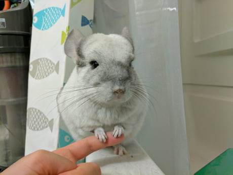
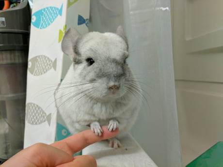

The chinchilla (Chinchilla chinchilla and Chinchilla lanigera) is a species of rodent that is native to the Andes mountains in South America. They have the densest fur among all land mammals.
 

Chinchillas are extremely agile and can jump extremely high, up to 6 feet.
Chinchillas cannot bathe in water, as their dense fur makes it so that they can only bathe in dust. If bathed in water, chinchillas may get sick.
Chinchillas make a variety of different sounds, including barking. Click here to hear what it sounds like!